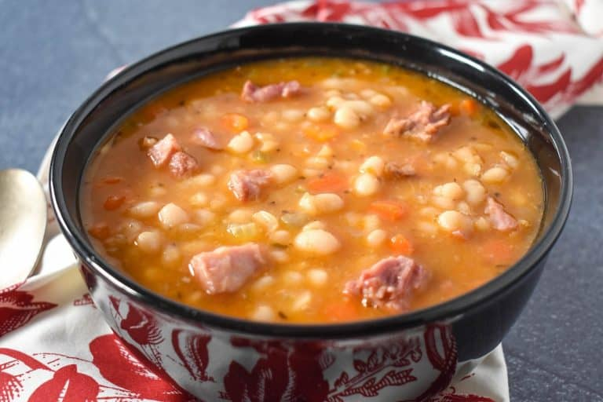

Navy Bean Soup

Description
This navy bean soup is made with smoked ham shanks, vegetables and spices. It’s a hearty and delicious soup the whole family will enjoy.
Like with many bean soups, you can’t rush the process, so make this navy bean soup on a leisurely afternoon. Your time will be rewarded with a big pot of soup that will feed your body and soul!
Ingredients
- 16 ounces Navy Beans
- 1 pound Smoked Ham Shank, rinsed
- 2 tablespoons Olive Oil
- 1 medium Onion, finely diced
- 2 Carrots, diced
- 2 Celery Ribs, diced
- 3-4 Garlic Cloves, minced
- 1 tablespoon Tomato Paste
- 1 teaspoon Dried Oregano
- 1 teaspoon Spanish Paprika
- 1/4 teaspoon Black Pepper
- 4 cups Chicken Broth
- 4 cups Water
- 1 Bay Leaf
- Salt, to taste
Steps
- sort navy beans
- Add the beans to a pot. Cover the beans with 4-6 cups of water. Let them soak overnight. Drain the water completely and rinse the beans well with fresh, cold water.
- An hour is enough. Sometimes, the beans need to cook longer.
- Start with rinsing the ham shanks with cold water and pat them dry.
- Dice the onions, carrots and celery. They’re all going into the pot at the same time so keep them in the same bowl.
- Mince the garlic.
- Measure out the tomato paste, oregano, paprika and black pepper.
- Heat the olive oil in a large, heavy pot over medium heat. When the oil is hot, but not smoking, add the onions, carrots and celery. Cook the vegetables for 5 minutes, stirring frequently.
- Next, add the garlic, tomato paste, oregano, paprika and black pepper, cook 1-2 minutes, stirring frequently.
- dd the smoked ham shank, navy beans, chicken broth, water, and the bay leaf to the pot and stir well. Raise heat to high and bring the liquid to a boil; it will take about 6-8 minutes. Then, lower the heat to medium-low, cover and cook the soup for 60 minutes, stirring occasionally.
- Keep the soup at a simmer/gentle boil. If it’s boiling too vigorously, lower the heat a bit. Adjust the heat as necessary.
- Remove the smoked ham shank from the pot onto a cutting board or plate (use tongs to make this easy). Cover the soup and continue cooking.
- When the smoked ham shank is cool enough to handle, remove the meat from the bones. Discard the bones and any fatty pieces. Chop the meat and return it to the pot.
- Continue cooking the navy bean soup for another 15 minutes. Taste a couple of beans; if they are tender, the soup is done.
- If the beans are still a little firm, cover and continue cooking. Check the beans every 15 minutes or so, until they reach the desired tenderness. As the soup thickens, stir more often so the beans don’t stick to the bottom of the pot.